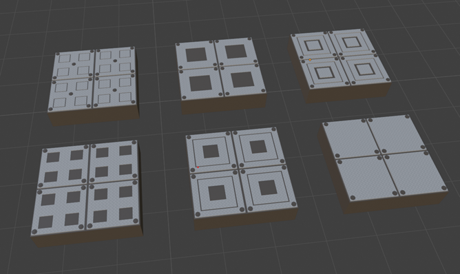
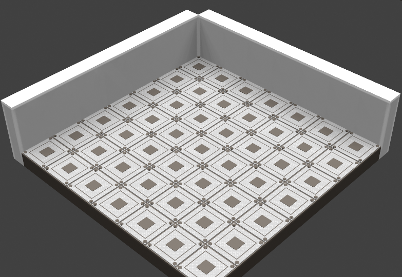
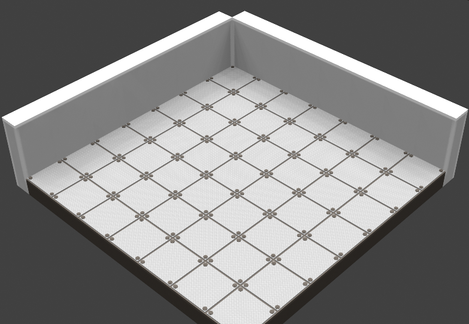
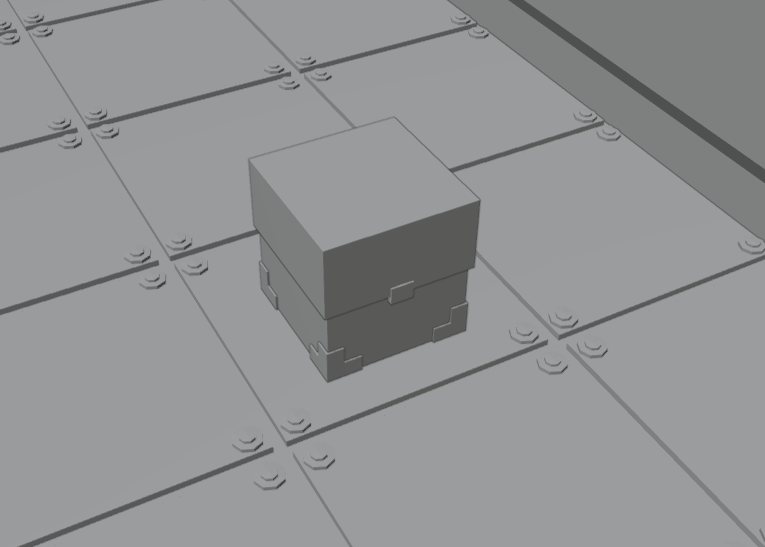
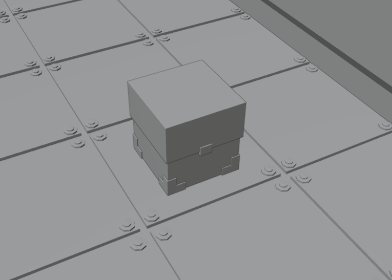
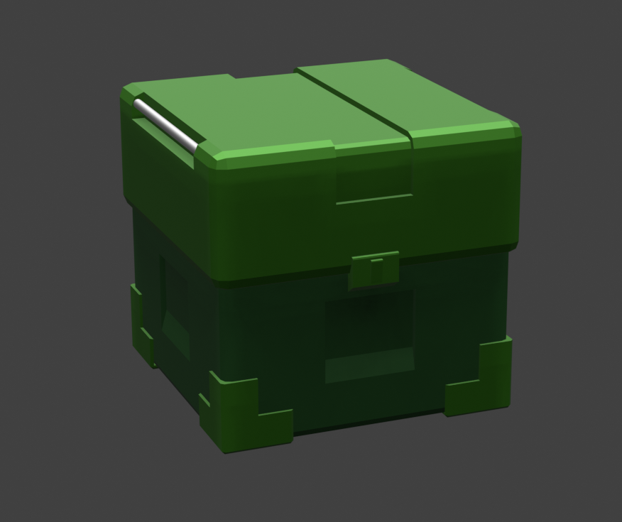

Q.U.O.T.A is the last Client project for my second year. It is a casual game for adults with a deceptively family-friendly aesthetic coupled with dark undertones.
Q.U.O.T.A is an isometric grid-based puzzle-solving game set in a dystopian Sci-Fi factory. The player is tasked with issuing a set of instructions to a robot, with the goal to fulfil a quota on each level of the game by collecting and delivering material to an incinerator or collector. The robot only gets one chance to execute its commands and fulfil its quota, or else it would be destroyed and replaced with a new one. The player’s initial objective is to keep the robot from failing to meet its quota, with a secret new objective revealed as the game progresses further.
The core gameplay loop of Q.U.O.T.A revolves around planning, inputting a set of commands into a list and executing those commands. If the robot is successfully guided to fulfil its quota, then it proceeds to the next level. If it fails, it is sent to evaluation and then terminated. The player only has one chance to complete the level.
This is a group project, with a five-person team. My role in this project was the primary 3D environmental artist responsible for creating the floor tiles, walls and the décor. I was also entrusted to creating the concept art for those assets. In addition, as two members of the team would be modelling the resource collecting chutes and character models, and were relatively inexperienced with Blender, I had to help teach some of the functions and key binds. Once again, I primarily used Blender for 3D asset creation, and Krita for concept art.
The team’s first major discussion surrounding the brief was interpreting the Client’s vision for a “dystopian factory”. Our idea was either to pursue a deceptively clean futuristic theme or pursue a more typical utilitarian factory design. My initial research explored down these two paths. For both, I browsed for images of modern factories utilising heavy automation, and sci-fi factory concept art as a base for inspiration. I separated those with a lighter colour palette from those with a rustier colour palette.
I began with generating several AI-generated images of what the main robot character could possibly look like, with the intention of informing the general direction we would go style-wise.


Regarding the environment of the game, I browsed for images of modern factories utilising heavy automation, and sci-fi factory concept art as a base for inspiration. I separated those with a lighter colour palette from those with a rustier colour palette.

I was particularly inspired by the art style of the top-down action-stealth game “Heat Signature”, which features both the clean and industrial aesthetics that I was looking for.


For scheduling, the team created a Gantt Chart, with each member being assigned a set of tasks to perform over the duration of the client project assignment. These objects outlined what we roughly sought to accomplish based on the initial roles we chose for the project. For example, despite primarily being interested in creating the environmental assets, I had an idea for an animated security camera that tracked the player’s movements which meant that some of the time would be dedicated to animation work.
An important part of this project which I pushed for was a heavy emphasis on close collaboration and communication between all team members to ensure a clear and concise direction for each member to follow. This was personally important to me as I believe that clear communication helps motivate me to continue working on my part of the project.
For communication and updates, the team created a Discord server, with categories for 3D, 2D and coding and channels within the categories to post work and files. On Tuesdays, the team would meet in person during classes, wherein we discuss plans and direction. On top of our weekly meetings in person, one suggestion I forwarded was for regular meetings on discord. These meetings would be scheduled weekly, on either Fridays or Saturdays, usually from 15:00-16:00, utilising Discord’s events feature which notifies everyone involved.
The point of these meetings was to check up on progress, help with modelling issues, discussing roadblocks, et cetera. It was meant to serve as a form of motivation and reminder for the whole team to better focus on the work. This constant communication proved very effective in getting work done and keeping the team on track.

To get an understanding of what would fit with a futuristic factory aesthetic, I decided to begin through making the tiles. I initially created white tiles with a black base following the “clean” futuristic style. We decided that the robots would have a darker coloured exterior, so I wanted the tiles to contrast well against. I created three sets of tiles with colours I thought suited a sci-fi aesthetic. I chose to create the white tile in blender as I believed it best fit the sci-fi style.

Feedback from the team suggested the tiles were difficult to distinguish from each other and did not look very appealing/were too flat. In addition, at this point the team had on a less clean aesthetic, so the tiles no longer fit with the theme. Instead, I decided on a duller grey, with metal studs/screws and created a metal texture to compliment the top part of the tile.
This fit closer with a more industrial aesthetic, whilst keeping its simplicity. The design popped out and the tiles were easily distinguishable from each other. I experimented with expanding on this basic design with square patterns to see how sci-fi I could make them.
I picked the two that I liked the most and compared them to determine which one would be best for gameplay.
 Of the two, although I felt the former connected with the sci-fi aesthetic better, In the end I decided to stick with the original version as it was less visually cluttering for the game environment and wouldn’t draw the player’s attention away from the gameplay.
Next, I had to make the walls for the level area. For the concept art, I wasn’t sure what direction I wanted to pursue when making the walls, so in the end I kept the walls simple and straightforward. In addition, I planned out some decorations in advance that could cover the walls.

Although the concept had flat/straight walls, I realised they would not be very visually interesting and wanted to do more with them. An important consideration I had whilst making the walls were that they could not block/overlap with the tiles, neither could they obstruct the view of the player. I also had to leave enough space to put on the decorations like pipes, electrical boxes, and other objects. This put a restriction what I could do with the walls.
I considered three shapes for the walls. One where the upper half was extruded inward, one where it was flat, and one where it was extruded outward. I decided upon the outwardly extruded wall as I thought it was most visually distinct of the three when placed in a line.

I separated the upper and lower halves with distinct colours and applied a dark noise texture to break up the monotony of the basic colours, attempting a fusion of the somewhat “clean” aesthetic with a worn-down appearance to imply an environment in use and having operated for a long time.

Other members of the team pointed out that the walls did not invoke a factory aesthetic, but rather a more clinical look, which I attempted to address through adding a warning stripe along its centre.
During level generation, the game will randomly generate interior walls that provided an obstacle to the player’s movement. These modular interior walls had to connect with each other in all four directions and sometimes would be spawned in without any connections whatsoever. These I left as basic wall blocks for the sake of being capable of seamlessly connecting with other walls.
As the game would be set in a factory environment, I wanted to build on the previous concepts I had made for assets that could decorate the walls and enhance the environment. The concepts as seen below, within a theoretical level area complete with all the decorations.

I wanted to keep the assets simple but recognisable in design. This is because visually, the décor would be difficult to see from the high-up isometric viewpoint, especially the finer details.

Amongst my earliest ideas was to create an animated security camera which would follow the QUOTA robot’s movements as they progressed through the level. This was to show that the QUOTA robot was being monitored at all times to gauge its efficiency and success, which can also serve as a sinister reminder of the price the player would have to pay if they failed to meeting the quota. A major issue was, the camera would most likely be either obstructed from view by interior walls, or placed within them during level generation. Therefore I decided against giving it animation, instead just keeping it as a static object.


The concept for a crate that would deploy the QUOTA robot, with a detachable lid that pops off. The team discussed how the robot was to be spawned into a level after the previous one is destroyed. However, I ended up using the concept for a rubbish bin which is meant to be disposed of via the incinerator.
Originally, I went for an entirely blocky design for the resource crate following the concept art. I was happy with the overall shape, although thought it was too simple-looking, and made extensive use of bevelling and cutting out shapes to give a sci-fi spin.
 

The biggest challenge was figuring out which colour best suited the crate. I wanted the crate to have a consistent colour only with tone variation to differentiate the roof from body. I tried three combinations of colours, although each stuck out too much in the environment.

I considered making them green, as it could represent a rubbish bin meant to be disposed of. Although I was not happy with the contrast of colours with the surroundings either. I decided to use the 3rd box in the end.
The QUOTA robot must collect fuel, the primary resource of the game, which it sends up to extraction chutes. These are represented by easily recognisable barrels in a group. Below you can see the concept art (Made by another team member)
I stuck closely to the concept art whilst creating the 3D model, resulting in these barrels.


This is what the game could potentially look like when generated with all the assets I have created. The full game also includes the robot character, the incinerators and the chutes. In game, the map can be rotated in all four directions, wherein the outer walls closest to the camera disappear allowing the player to see in. The player will have to navigate through this level collecting as many of the materials as possible to deposit at chutes and incinerators to fulfil the Quota.